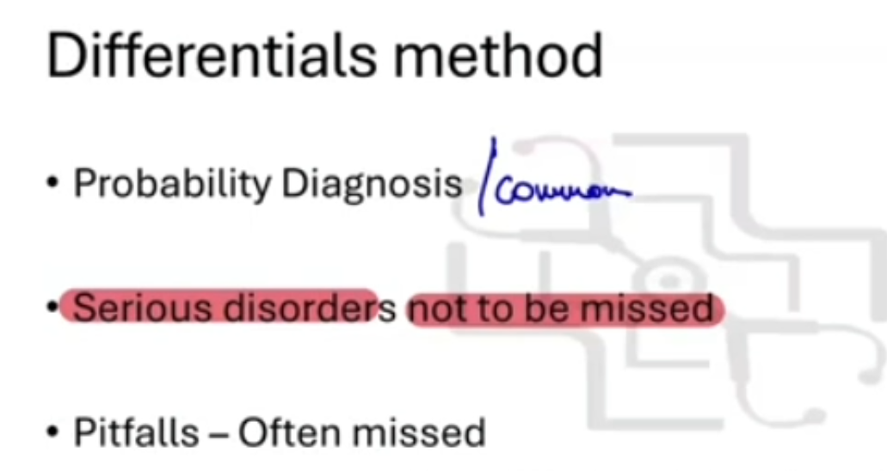
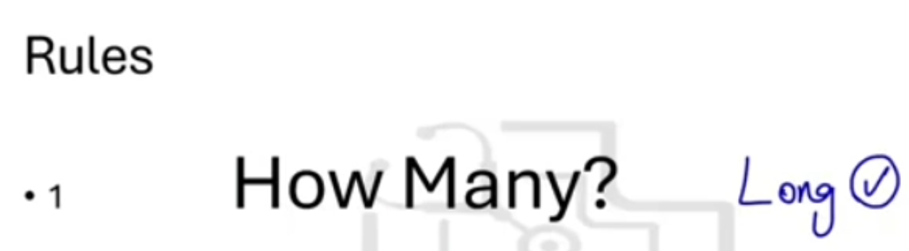
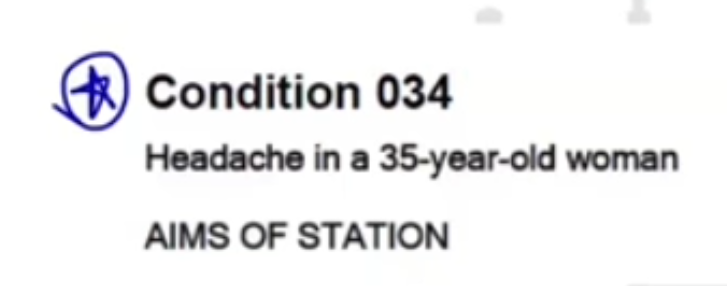
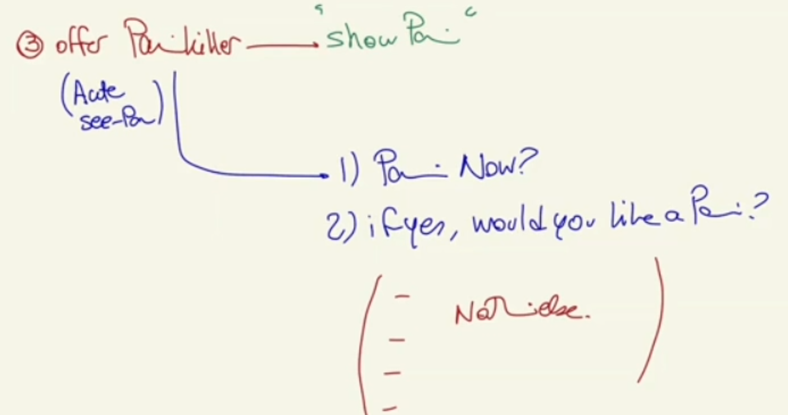
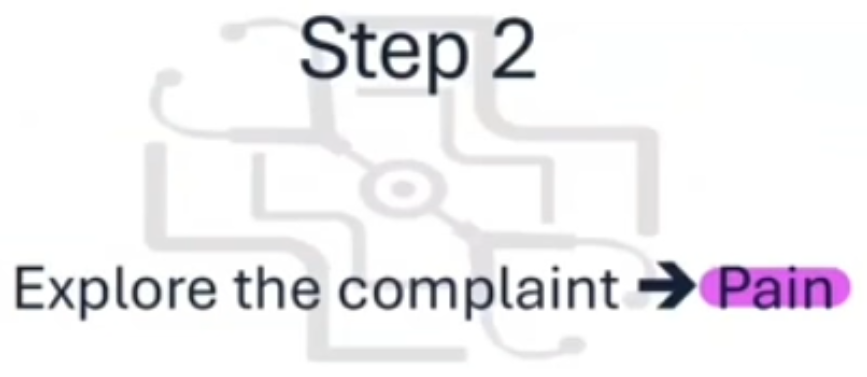
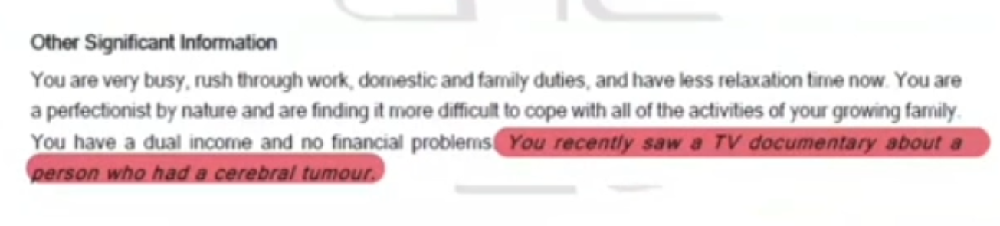
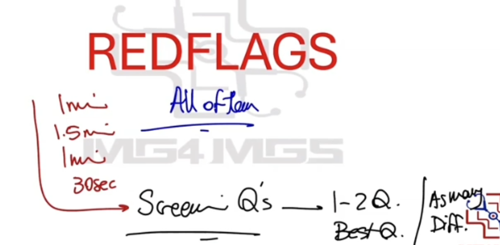
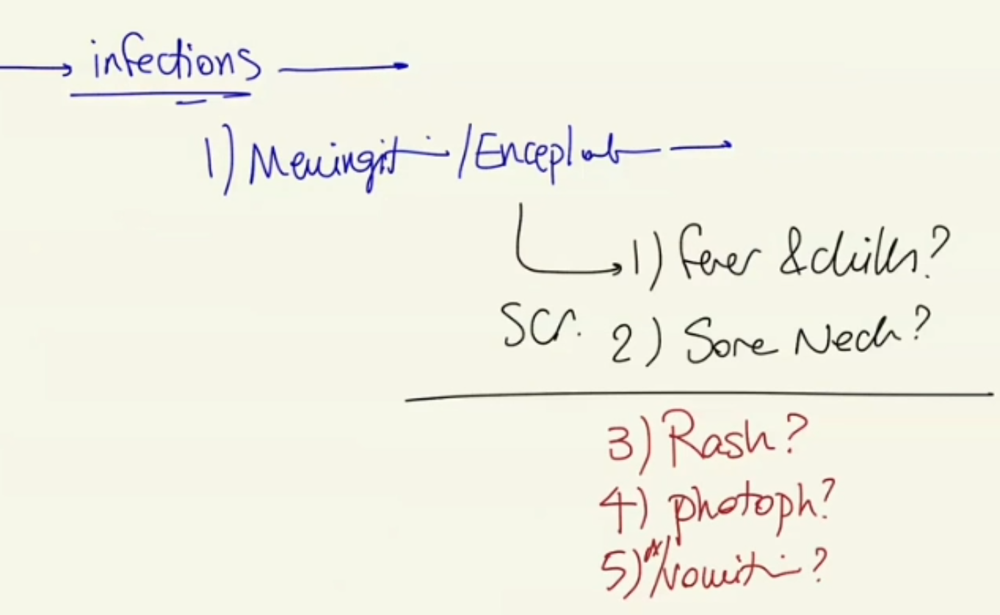
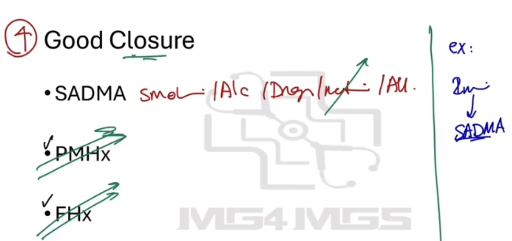

Approach to Headache - History Taking
Source: Dr. Amir workshop — Med workshop 2 - 2026 / CLASS 1 HEADACHE (Aug 2026 drop) · Specialty: neurology
Case Overview
The headache cluster is the highest-yield neurology station (roughly a 90% chance of a headache case if neurology comes up). There are approximately 10 versions (old and new). In Version 1 the primary assessed activity (PAA) is diagnosis formulation; in Version 2 the PAA is a 6-minute history followed by explaining the diagnosis and differential diagnosis, and occasionally a physical examination is provided on a card. The teaching goal is to build one reusable history structure that can be adapted to any age, context or duration (acute or chronic).
Building the Differential Diagnosis (MTRIC)
Work from the base of the pyramid: generate a good, specific differential first, then structure the history around it. For a 45-year-old with headache of unknown acuity, group the differentials into probability diagnoses, serious disorders not to be missed (red flags), and pitfalls (commonly missed causes).
Red flags (must always exclude): brain tumour / space-occupying lesion (SOL); temporal arteritis in any patient >50 years.
Common primary headaches: migraine, tension-type headache, cluster headache.
Neurological / intracranial: intracranial haemorrhage and subarachnoid haemorrhage (ICH/SAH), benign (idiopathic) intracranial hypertension, trigeminal neuralgia.
Infections: meningitis / encephalitis, dental infection, sinusitis (pharyngitis, tonsillitis, otitis media all tick the ‘infection’ box).
Referred pain: cervicogenic headache (cervical spondylosis, osteoarthritis), eye problems (glaucoma, refractive error), temporomandibular joint (TMJ) dysfunction.
Other: shingles (herpes zoster), medication-overuse headache.
Mnemonic MTRIC: M – Migraine, Malignancy; T – Tumour, Tension headache, Temporal arteritis, Trigeminal neuralgia; R – Referred pain (neck, eye, TMJ); I – Infections, (benign) Intracranial hypertension, Intracranial haemorrhage; C – Cluster headache, Cervicogenic headache. Be specific — naming only ‘infection’ will not earn credit; name meningitis, sinusitis, dental infection. Reserve temporal arteritis for patients >50 years, and do not include trivial causes such as ice-cream headache.
Step 1 - Introduction, Haemodynamic Stability, Concern and Analgesia
- Introduction: after the ID check and being taken to the patient, sanitise hands, introduce yourself and confirm the patient's preferred name.
- Haemodynamic stability: before starting, confirm the patient is stable — ask the examiner for BP, pulse rate, respiratory rate and temperature. This applies to every headache regardless of chronicity, because any patient (even one with 6 months of migraine) could present today with SAH or meningitis. In 2025 most examiners simply state the vitals are stable.
- Open-ended question: "How can I help you today?" or "I've heard about your headache, can you tell me more?" Expect a two-line opening statement and almost always a patient concern (often fear of brain tumour).
- Respond to the concern: Acknowledge ("I understand your concern, thank you for coming in"), Empathise ("I'm sorry you're going through this"), Reassure ("I'll ask some questions, examine you, find the cause and make the best management plan").
- Offer analgesia: "Are you in pain now?" If yes, offer a painkiller and arrange it via the nurse before continuing.
Step 2 - Pain Characteristics (SIQORAA)
Use SIQORAA for headache (and abdominal, MSK and chest pain):
- Site: "Where is the headache? One side or both?" (migraine is typically unilateral; tension is bilateral/global).
- Intensity: 0–10 scale.
- Quality: throbbing/pulsatile (migraine) versus dull/tight/pressure (tension and most others). Do not lead the patient.
- Onset/timing: when it started and duration; constant versus intermittent (migraine is episodic once or twice weekly; brain tumour pain tends to be constant); is it getting worse; first episode or recurrent.
- Radiation: does it travel anywhere.
- Alleviating/aggravating factors: what makes it better or worse; response to any medication taken.
- Affect on life: ask in chronic cases.
Completing SIQORAA yields a provisional diagnosis in >90% of cases.
Step 3 - Provisional Diagnosis Probing and Red Flags
Red-flag questions (mandatory - the history is incomplete without them):
- Worse with bending, coughing or sneezing (raised intracranial pressure).
- Early-morning headache with vomiting.
- Pain that wakes the patient at night.
- Neurological deficit: weakness, numbness, pins and needles, visual disturbance; if needed also speech and gait problems.
- General cancer questions: recent weight loss, lumps or bumps, loss of appetite.
- Past or family history of brain cancer.
- Young, overweight female on medication (acne treatment / OCP) - benign intracranial hypertension.
Differential-Specific Screening Questions
Migraine: nausea/vomiting; photophobia/phonophobia ("light or noise sensitive?"); visual aura (flashing/sparkling lights); triggers (cheese, alcohol/wine, OCP, lack of sleep, stress, periods); family history of migraine.
Tension headache: stress screen (mini-HEADSS) — home and work stress, mood, sleep.
Trigeminal neuralgia: pain triggered by facial movement (smiling, laughing, talking).
Temporal arteritis (only if >50 years): painful thickened cord over the temple; blurred vision; jaw claudication (worse on chewing) and pain on combing; polymyalgia rheumatica (shoulder/hip pain and stiffness).
Infections — meningitis/encephalitis: fever/chills, neck pain/stiffness, rash, photophobia, nausea/vomiting. Sinusitis: post-nasal drip. Dental infection: dental hygiene, last dental visit, cavities.
Cluster headache: runny nose and watery eyes with the headache.
Referred pain: neck pain; red eye (glaucoma); TMJ dysfunction (excessive chewing/grinding).
Medication and trauma: current medications (acne treatment/OCP for BIH); any head trauma or falls (bleeding risk in the elderly); facial rash (shingles).
Closure
With 30–45 seconds remaining, rule out as many differentials as possible with 1–2 questions each. Most 4-minute histories end here. In a 6-minute history, add a good closure with SADMA (Smoking, Alcohol, Drugs, Medications, Allergies), past medical history and family history. Always explicitly exclude red flags even in an obvious migraine, and address the patient's cancer concern with a clear explanation of why a tumour is unlikely — failure to address the concern will fail the station.
Case Figures


























🔬 Expert Review & Enhancements
Reviewed by: history-taking-expert (Australian clinical supervisor) · fact-checked against the irStudy medical textbook RAG index.
✏️ Corrections
No factual corrections required.
⭐ Suggested Enhancements
🏷️ Metadata
📚 Reference Citations (RAG)
John Murtagh General Practice, 8th Edition.pdf p.xiv (p29) qdrant:9f262528-f181-4d88-98eb-c1b710ea8487
John Murtagh General Practice, 8th Edition.pdf p.80 (p229) qdrant:c4c0c7c3-11ce-41ad-b015-a13ca14f48ba
John Murtagh General Practice, 8th Edition.pdf p.index (p3553) qdrant:a0290514-fea4-47e3-9ff5-1b08dcc4c0e2